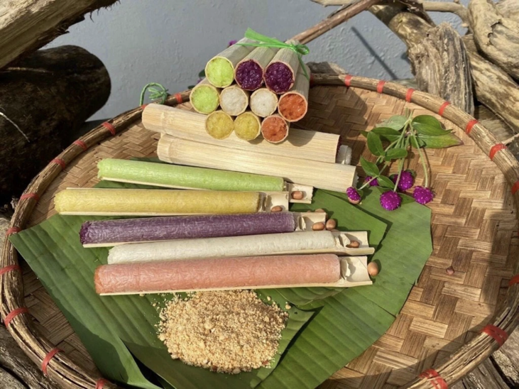
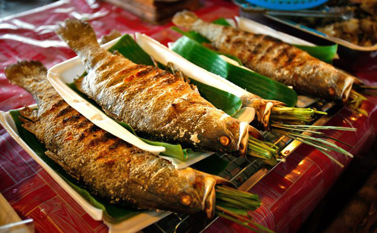
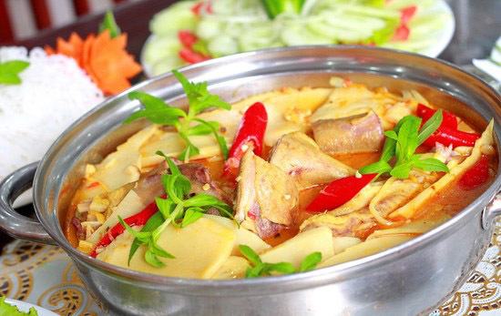

Đến với những cung đường vùng núi phía Bắc, hành trình của bạn sẽ không bao giờ trọn vẹn nếu thiếu đi trải nghiệm khám phá tinh hoa ẩm thực nơi đây. Các món ăn vùng cao không cầu kỳ trong cách trình bày, nhưng lại ghi dấu ấn đặc biệt bởi nguyên liệu núi rừng và các loại gia vị đặc trưng như hạt dổi, mắc khén không thể tìm thấy ở đồng bằng.
Các món ăn vùng cao không cầu kỳ trong cách trình bày, nhưng lại ghi dấu ấn đặc biệt bởi nguyên liệu tươi sạch và gia vị đặc trưng.
1. Sơn La - Điện Biên: Ngọt Ngào Vị Thảo Nguyên
Dừng chân tại Mộc Châu (Sơn La), bạn nhất định phải gọi ngay một đĩa Bê chao nóng hổi. Thịt bê non mềm, thái miếng mỏng, chao nhanh qua chảo dầu sôi sục để giữ độ ngọt, ăn kèm với nước tương gừng và vài nhánh rau cải mèo đắng nhẹ. Sáng sớm thức dậy, một ly sữa bò tươi đun nóng nguyên chất sẽ làm ấm bụng lữ khách ngay tức thì.
Tiến về Điện Biên, món Gà nướng mắc khén hay Xôi nếp nương dẻo thơm được đựng trong các ếp khẩu mây tre đan chắc chắn sẽ khiến bạn thòm thèm.

2. Yên Bái - Lào Cai: Tuyệt Đỉnh Hương Nếp & Cá Suối
Nếu đi qua thung lũng Mường Lò hay đèo Khau Phạ, món Xôi nếp Tú Lệ là huyền thoại. Hạt nếp to, tròn, khi đồ chín có độ dẻo quánh, tỏa mùi thơm ngào ngạt không cần đến nước cốt dừa. Xôi ăn cùng với thịt lợn bản cắp nách nướng hoặc cá suối nướng Pa Pỉnh Tộp (cá gập đôi nướng than hoa) của người Thái là sự kết hợp hoàn hảo.

3. Hà Giang - Cao Bằng: Món Ngon Xua Tan Giá Lạnh
Lên cao nguyên đá Đồng Văn (Hà Giang), bát Thắng Cố bốc khói nghi ngút cùng ly rượu ngô men lá cay nồng là thức quà "sưởi ấm" tuyệt vời nhất tại các phiên chợ. Nếu chưa quen với Thắng cố, bạn có thể thưởng thức Bánh cuốn nước xương rắc đầy giò chả và hành phi.
Sang đến Cao Bằng, buổi tối trời trở lạnh, được xì xụp bên nồi Lẩu vịt om măng chua chua cay cay tại chợ đêm, tráng miệng bằng viên thạch đen Tràng Định thanh mát sẽ là cái kết hoàn mỹ cho một ngày dài khám phá.

Sẵn sàng cho những chuyến đi giữa Mây Ngàn?
Khám phá các tour miền núi phía Bắc của Mây Ngàn Travel — được thiết kế để bạn chỉ cần xách balo lên và đi!
Khám phá ngay